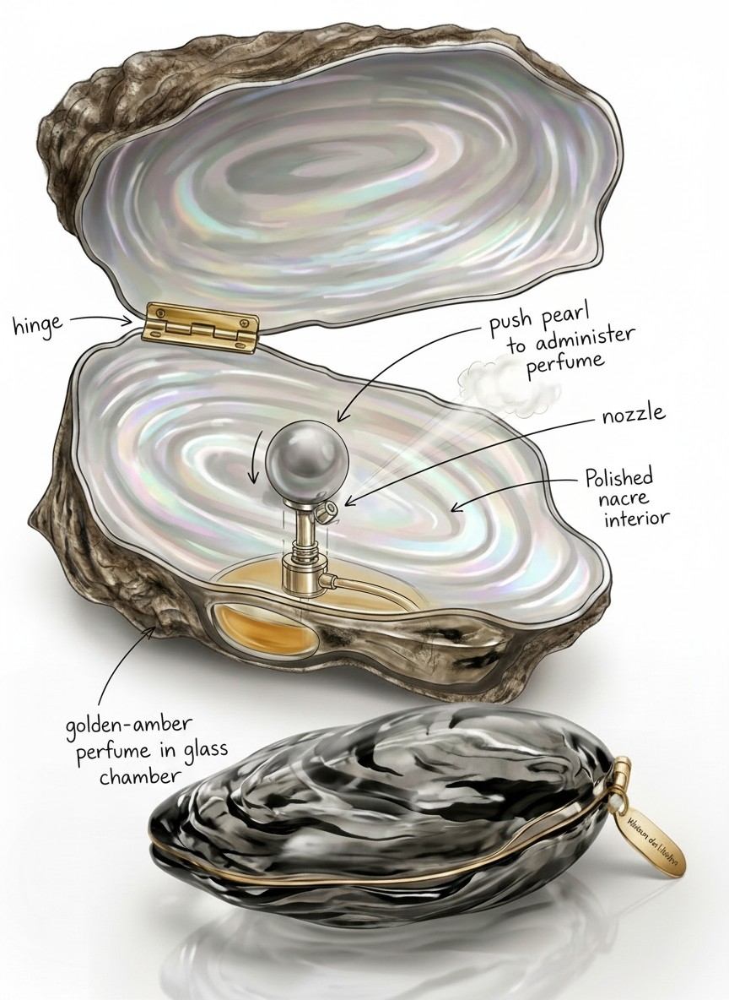
Brendan Giang
Merrily We Roll Along
Stephen Sondheim’s musical follows three friends, told in reverse.
-
1976
First scene: where they end up
-
1957
Last scene: “Our Time”, the night they meet
Inspired by
“Our Time”
Merrily We Roll Along · Stephen Sondheim
The world is your oyster.
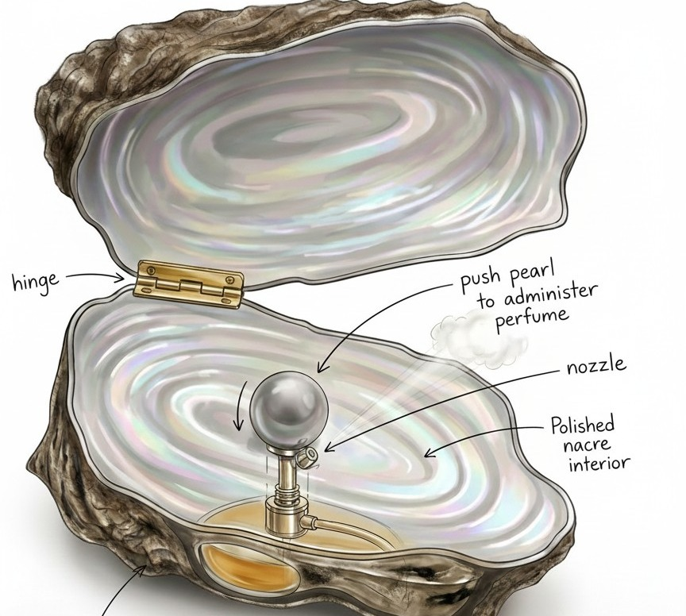
Open the shell.
Press the pearl.
Key decisions
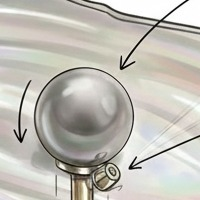
Pearl is the button
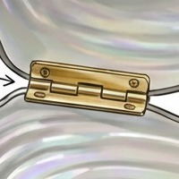
Hinge at the tip
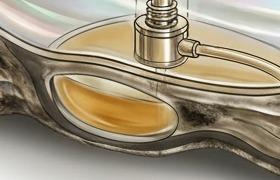
Chamber in the shell
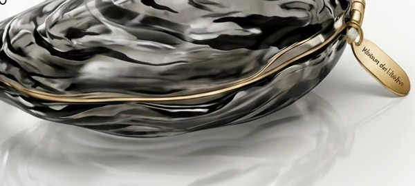
Closes like an oyster
Materials
Smoked glass
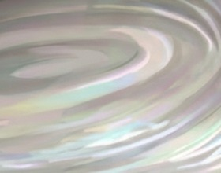
Mother-of-pearl
Grey pearl
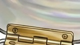
Brass
Amber scent
Evolution
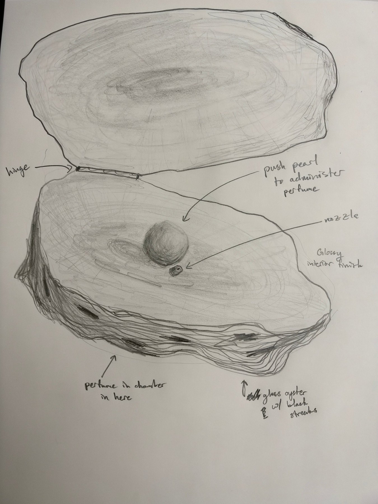
Sketch
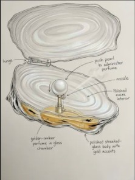
Cleanup
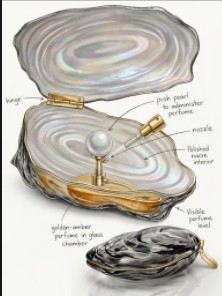
Color
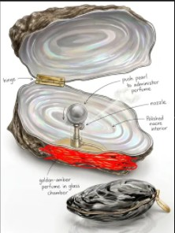
Fix
Final
Vizcom workbench
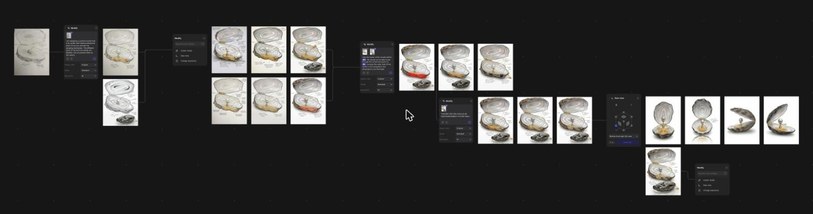
3D model
drag to turn · tap the pearl
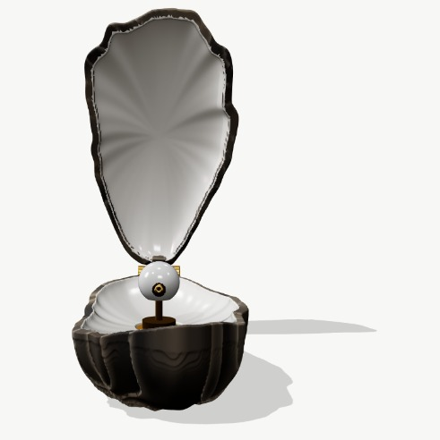
Front
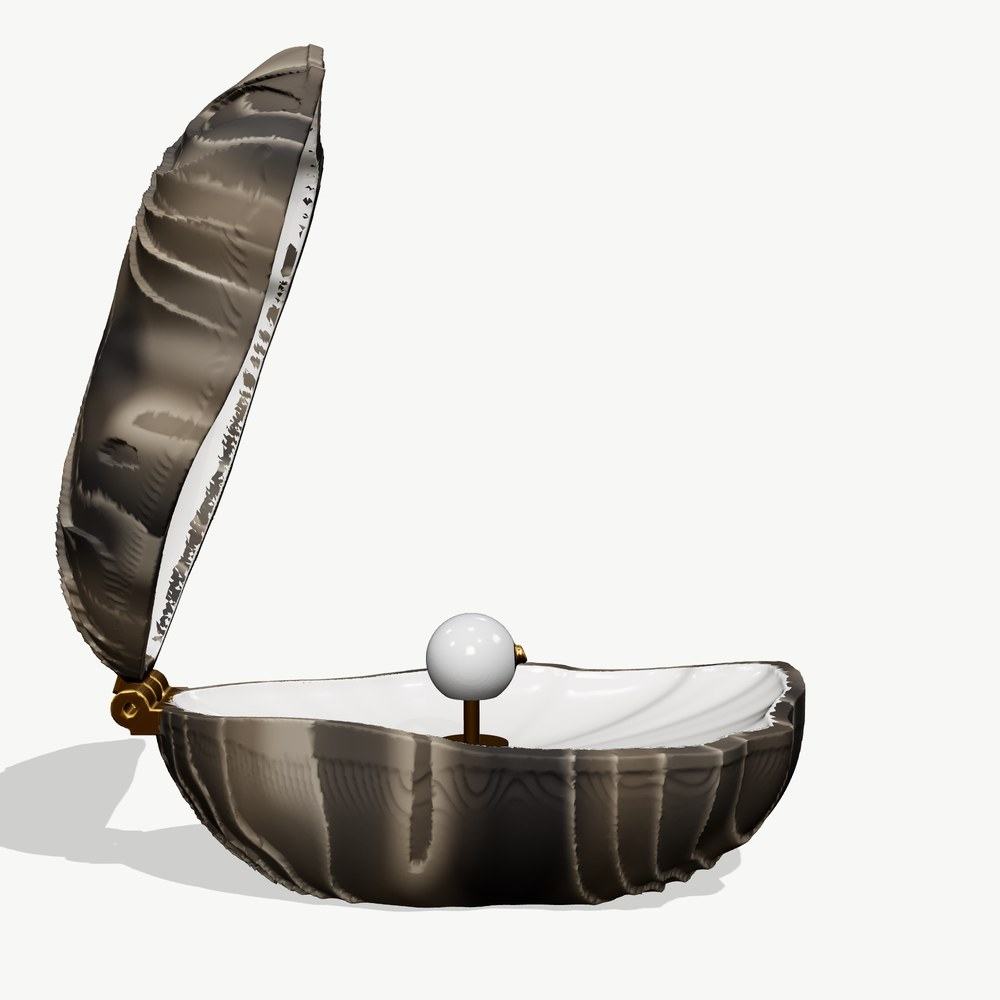
Side
Why OySir
The idiom, made real
Press the pearl to spray
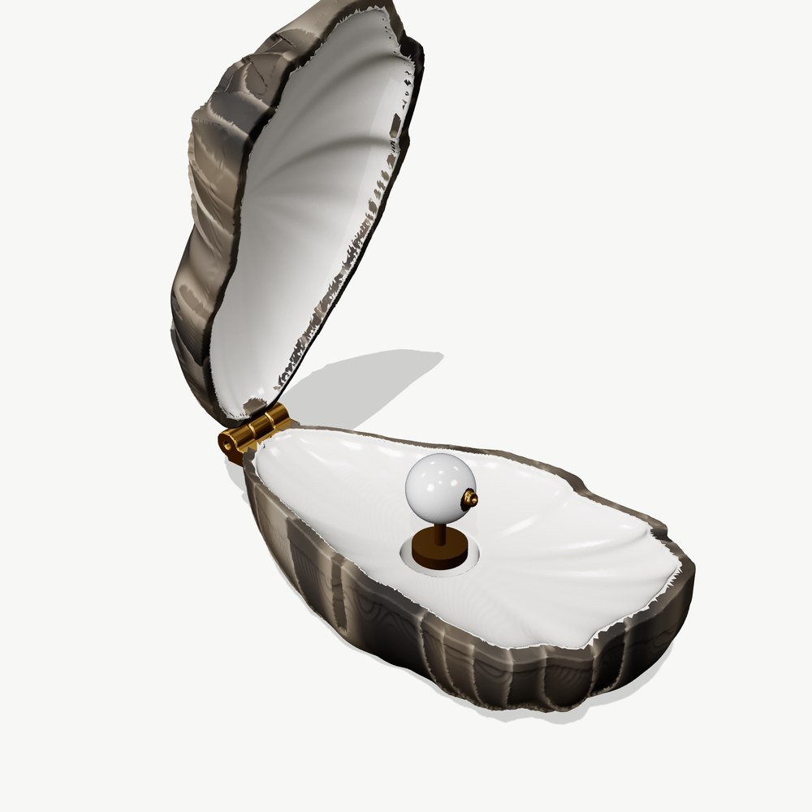
Modeled and printed
. It’s your time.